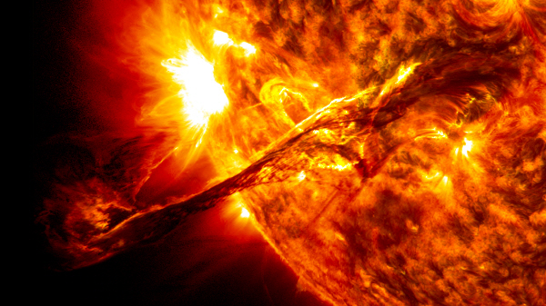

은하와 별
세상에서 가장 큰 보석
하루가 일년같은 금성
햇빛의 나이는?
블랙홀
햇빛의 나이는?

햇빛은 태양에서부터 우리의 피부 표면까지 약 1.5억 km의 거리를 8분 만에 닿을 수 있습니다. 그렇다면 그 빛의 나이는 몇 살일까요? 놀랍게도 무려 3십 만년 전 태양의 중심핵에서 생성되었습니다. 강렬한 융합 반응에 의해 형성된 햇빛은 태양의 표면 밖으로 빠져나오려면 수 천년이 걸린다고 하네요.